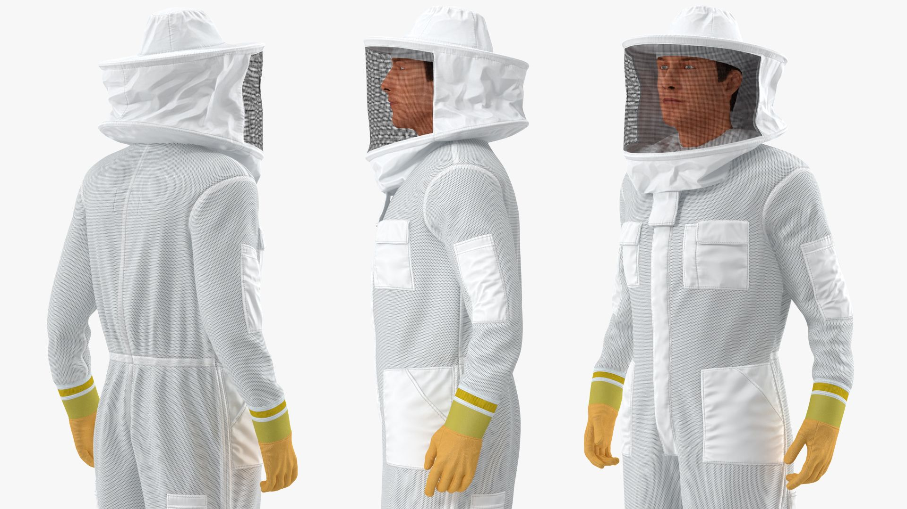
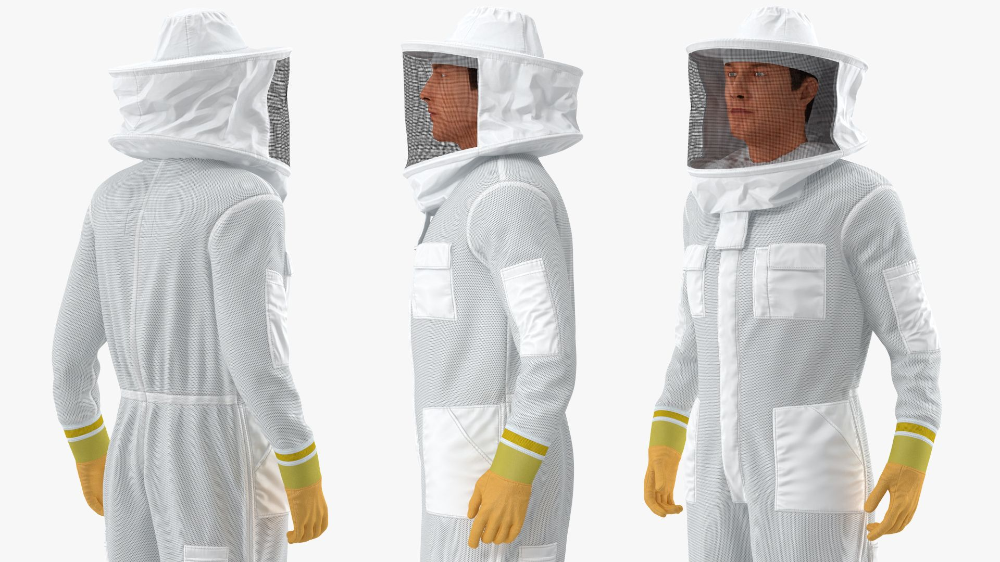

Tools

Starter Tools
- Hive Tools (J-Hook)
- Smoker
- Protective Gear (Suit/Jacket & Pants, Mesh face and hat cover, Gloves)
- Hive (Medium, Deep, Compact)
Helpful Links To Purchase Bees & Equipment
- Great Lakes Bee Co. - located near Muskegon about 2h and 15 minutes away from new Buffalo
- Hudsonville Honey - located in Nuncia Michigan about 1h and 40 away from new Buffalo
- Great Lakes Bee Supply - located in Galesburg mi about 1h and 15 away from new Buffalo. Great Lakes bee supply offers classes that are extremely helpful to a bee keeper at any skill level.
- Northern Bee Network - Directory to beekeepers
- Beeline -located in Mendon, Mi. Equipment, Bees, Gear, Classes.
 
